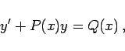
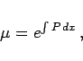
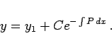
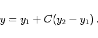
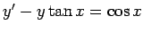
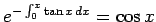

Inhalt Index DeskTop Bronstein

 Differentialgleichungen Gewöhnliche Differentialgleichungen Differentialgleichungen 1. Ordnung Wichtige Integrationsmethoden
Differentialgleichungen Gewöhnliche Differentialgleichungen Differentialgleichungen 1. Ordnung Wichtige Integrationsmethoden


Lineare Differentialgleichung 1. Ordnung wird eine Gleichung der Form
|  | (9.11a) |
genannt, in der die unbekannte Funktion und ihre Ableitung nur in der ersten Potenz, d.h. linear auftreten. Der integrierende Faktor ist hier
|  | (9.11b) |
das allgemeine Integral ergibt sich gemäß
Wenn in dieser Formel das unbestimmte Integral überall durch das bestimmte Integral in den Grenzen x0 und x ersetzt wird, dann gilt für die Lösung gemäß Hauptsatz der Integralrechnung y(x0)=C. Ist y1 irgendeine partikuläre Lösung der Differentialgleichung, dann ergibt sich die allgemeine Lösung nach der Formel
|  | (9.11d) |
Sind zwei linear unabhängige partikuläre Lösungen y1(x) und y2(x) bekannt, dann erhält man die allgemeine Lösung ohne Integration gemäß
|  | (9.11e) |
| Beispiel |
|
Es ist die Differentialgleichung  mit der Anfangsbedingung y0 =0 für x0 =0 zu integrieren. Man berechnet  und erhält gemäß (9.11c) die Lösung |